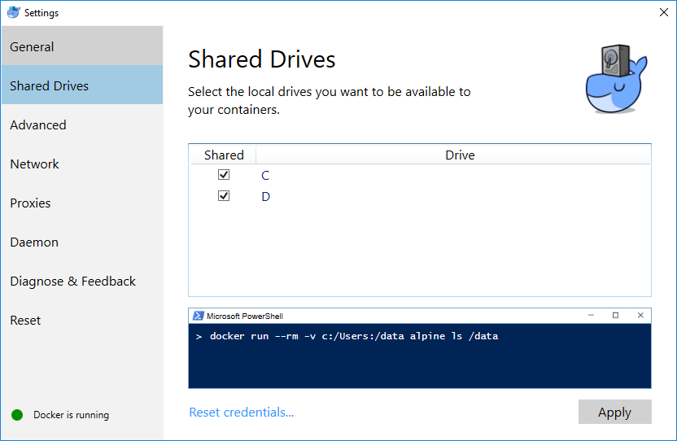
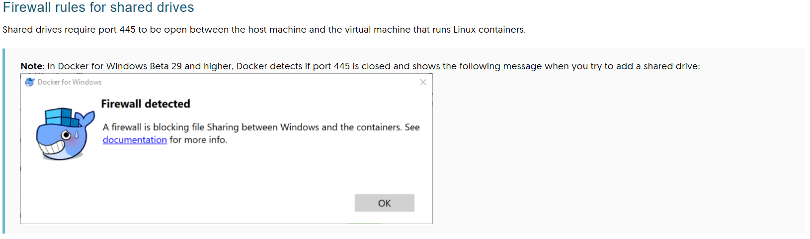
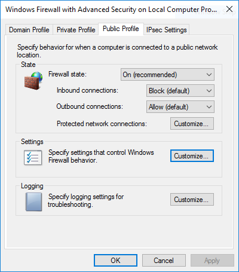
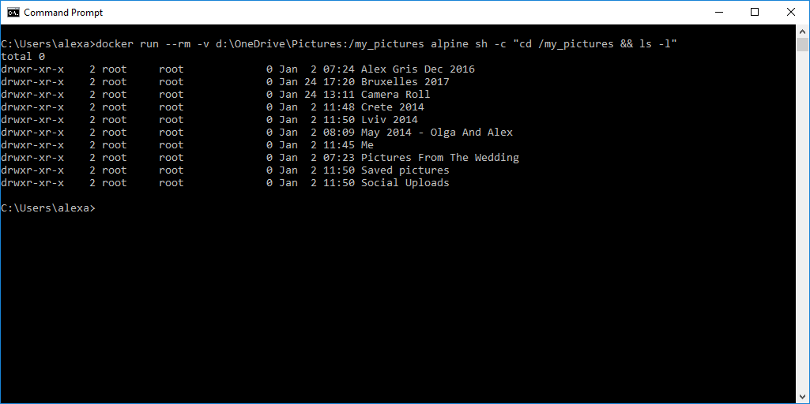
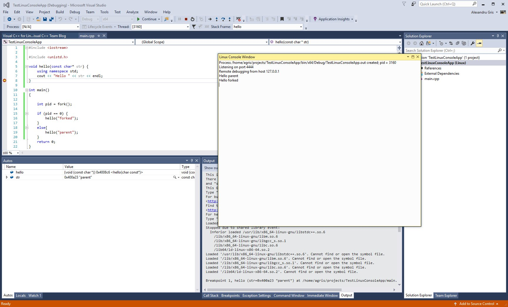
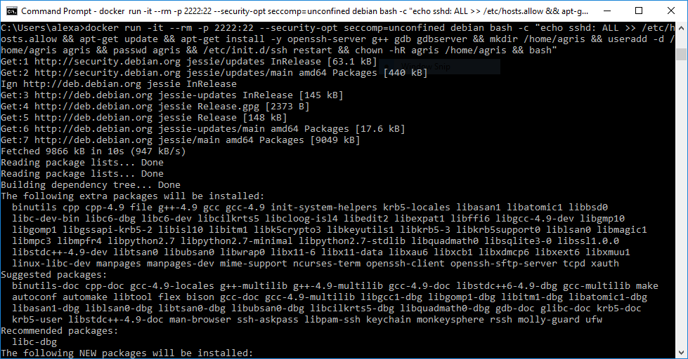
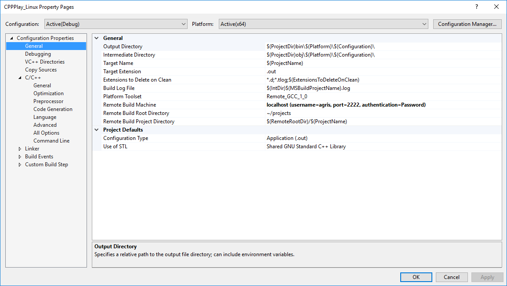
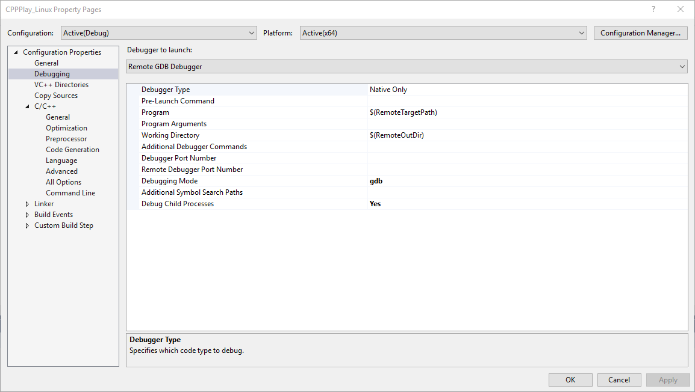
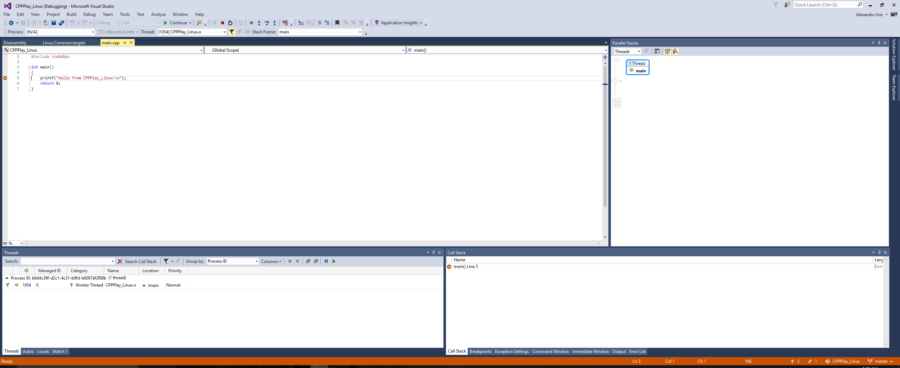

Docker And Containers Part 2
This is the second part of my personal Docker cheatsheet. In this part I will enable host file access to containers
and continue with the more complex example of building and debugging Linux C++ applications in Visual Studio, using a Debian container in the background.
Here is the first part: Docker And Containers
Using host files in a docker containers
First thing, we need to enable drives to be visible within the container. For this, we use the Settings dialog from Docker For Windows.

Port 445 must be opened in the Windows Firewall.

To share the drive, allow connections between the Windows host machine and the virtual machine in Windows Firewall or your third party firewall software. You do not need to open port 445 on any other network.
By default, allow connections to 10.0.75.1 port 445 (the Windows host) from 10.0.75.2 (the virtual machine).
Attention:
By default, the Docker network is considered in the Public Networks profile.
For my desktop PC at home, I have simply enabled firewall rules for the public networks (default is to block all inbound connections). This setting might be dangerous on a laptop.

Another option is to run gpedit.msc and change network profile for Unidentifiable Networks. :)
Now that we have enabled access to host folders, let's run the following command:
c:>docker run --rm -v d:\OneDrive\Pictures:/my_pictures alpine sh -c "cd /my_pictures && ls -l"

Let's disect it:
docker run --rmtells docker to remove the image after the command is run. The image is not persisted.-v d:\OneDrive\Pictures:/my_picturestells docker to mount thed:\OneDrive\Picturesfrom the host to the/my_picturesfolder in the container.alpine sh -c "cd /my_pictures && ls -l"from thealpineimage run theshcommand with the-c "cd /my_pictures && ls -l"parameters. It means change directory to/my_picturesand then, if successful, run thels -lcommand.
For a list of parameters of the docker run command, here they are: Docker Run. Another parameter very useful is the --env to sent environment variables in the container.
Example no. 1: delete all "mongo"-named containers:
The following example uses a mixture of batch commands (running on the Windows host) and Linux commands running in the Docker container.
It is clearly not efficient at all as it is much simpler to simply use batch for and if in Windows, but it is just an example to show that it actually works.
docker ps -a
> d:\to_delete.txt
&& docker run --rm -v d:\to_delete.txt:/my_data/to_delete.txt
alpine sh -c "grep mongo /my_data/to_delete.txt | awk '{print $1}'"
> d:\to_delete_2.txt
&& for /F %I in (d:\to_delete_2.txt) DO docker rm %I
Explanation: the command uses two files d:\to_delete.txt and d:\to_delete_2.txt as IPC between Windows and the command ran in the Linux container.
Example no. 2: developing Linux applications with Visual C++ for Linux and Docker
Visual C++ for Linux is great and works right outside the box when connected to a Virtual Box VM (in the picture below the VM is running a Debian).

However, creating full VMs, starting them and moving them around is complex and tedious. Here is a ligher alternative - use a Docker container for running and debugging the app.
- Run a Debian Linux distribution. Map ports. Create a local user and install g++, gdb and openssh-server. Drop into the bash console. Attention to the flag
--security-opt seccomp=unconfined- gdb will not be able to connect to the executable otherwise.
c:>docker run -it --env "USERNAME=agris" --rm --name debian_gcc_debug -p 2222:22 --security-opt seccomp=unconfined
debian bash -c "echo sshd: ALL >> /etc/hosts.allow
&& apt-get update
&& apt-get install -y openssh-server g++ gdb gdbserver
&& mkdir /home/$USERNAME && useradd -d /home/$USERNAME $USERNAME
&& passwd $USERNAME
&& /etc/init.d/ssh restart
&& chown -hR $USERNAME /home/$USERNAME && bash"

-
Type Linux password when prompted.
-
Create a Visual C++ for Linux project. Set connection to localhost on port 2222 (forwarded 22, the default sshd port, from the container)

- Set the debugger type to gdb.

-
Clean / Rebuild the project.
-
Happy debugging. :)

The container is run with the --rm flag above. You may want to remove it and save the image, not to have to install everything everytime the command is run.
Creating an image to host all the tools needed for building and debugging with VC++ for Linux
- Create the docker file (Dockerfile):
FROM debian:latest
ARG USERNAME=agris
ARG PASSWD=1234
ENV USERNAME $USERNAME
ENV PASSWD $PASSWD
RUN echo sshd: ALL >> /etc/hosts.allow
RUN apt-get update
RUN apt-get install -y apt-utils
RUN apt-get install -y openssh-server openssl g++ gdb gdbserver
RUN mkdir /home/$USERNAME \
&& useradd -d /home/$USERNAME $USERNAME -s /bin/bash -p `openssl passwd -1 -salt iuuA8932 $PASSWD` \
&& /etc/init.d/ssh restart \
&& chown -hR $USERNAME /home/$USERNAME
CMD /etc/init.d/ssh start && bash
- Build the image with the
gcc_debug_debian:latesttag:
c:>docker build -t gcc_debug_debian:latest .
- Clean up a little bit
c:>for /f "tokens=1, 3" %I in ('docker images') do if "%I"=="<none>" (docker rmi -f %J)
- Run the container and map the port 22 to 2222 on the host:
c:>docker run -it --rm -p 2222:22 --security-opt seccomp=unconfined gcc_debug_debian
- Try SSH by running ssh command in another container to test the SSH connection (192.168.1.6 is the local IP of my computer):
c:>docker run -it --rm gcc_debug_debian /usr/bin/ssh -l agris -p 2222 192.168.1.6
- Clean / Rebuild and then Start Remote Debugging in Visual C++. If the build step works but debugging fails, please make sure you have not forgotten the
--security-opt seccomp=unconfinedflag.
This is it for running and debugging C++ applications in a Linux docker container. Happy Hacking! :)